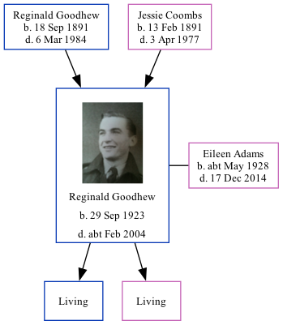

Reginald Norman Goodhew 1923 - c2004
[ Home ] | [ Calendar ] | [ Surnames Index ] | [ Family History ]The youngest of 4 children of Reginald Goodhew and Jessie Coombs (a cook)Reginald Goodhew, the third cousin once-removed on the mother's side of Nigel Horne, was born in Alfreton, Derbyshire, England on Sep 29, 19231,2,3 and. He married Eileen Adams (with whom he had 2 surviving children Paul N and Geraldene A) in Surrey, England around Aug 19454. Like his father, he was an aircraft fitter.
Throughout his life, Reginald lived in several places: at 18 Pine Road, Rochester, Kent, England on Sep 29, 19391; at 4 Brakey Hill, Bletchingley, Surrey in 19546; and at 9 Whiteknights Road, Reading, Berkshire, England c. 20035.
He died c. Feb 2004 in Reading3.
Parents
- Reginald Arthur was born on Sep 18, 1891
- Jessie May was born on Feb 13, 1891
Citations
- 1939 Register - Findmypast (was the son of the head of the household)
- Derbyshire Registrars Birth Index - Findmypast
- England & Wales deaths 1837-2007 - Findmypast
- England & Wales Marriages 1837-2005 - Findmypast
- UK, Electoral Registers, 2003-2010
- Surrey, England, Electoral Registers, 1832-1962
Media
Reginald Norman Goodhew (2)
Reginald Norman Goodhew
Surrey Electoral Register

1939 Register Transcription - TNA-R39-1769-1769C-019-05
Derbyshire Registrars Birth Index - GBPRS/B/392607812/1
England & Wales births 1837-2006 - BMD/B/1923/4/AZ/000489/063
England & Wales deaths 1837-2007 - BMD/D/2004/1/86013566
England & Wales marriages 1837-2005 - BMD/M/1945/3/AZ/000634/127
Family Tree
Generated by ged2site. Last updated on Nov 13, 2024